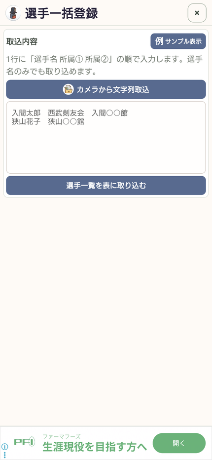

03 / 準備する
パンフレットから文字を読む
大会の名簿をカメラで読み取り、名前を打ち込む手間を減らします。
操作の入口ツール → 選手・所属取込・出力 → 選手一括登録
カメラを開く
「カメラから文字列取込」を押します。初回に求められたらカメラの使用を許可します。
必要な範囲を撮影する
選手名と所属が読みやすい大きさになるように写し、「撮影して取込」を押します。
認識結果を確認する
漢字、改行、不要な見出しを見直します。読みにくければ撮り直し、文字を確認して「確定」します。
選手と所属を整える
入力欄で、1行を「選手名 所属① 所属②」の順に整えます。次のページの表で登録内容を確認します。

